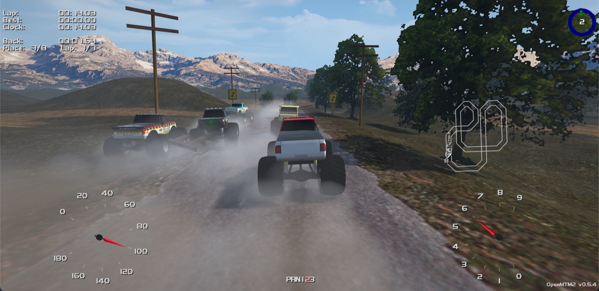
Play OpenMTM2 Free. Runs in Chrome, Edge, Firefox and Safari, on desktop and phone. Nothing to install.
About
OpenMTM2 is an open-source implementation of Monster Truck Madness 2 for the web. It reads the game data from your own MTM2 installation and plays it in a modern browser, with the original tracks, trucks, rules and HUD.
You don't need the CD to try it: OpenMTM2 can start from Microsoft's free MTM2 trial. It also accepts data from Beta 10, retail 2.00.41, the patched 2.00.42 and the community patches up to Community Patch 3. Your files stay on your computer; nothing is uploaded.
It goes further than MTM2, too. Add the PODs from Monster Truck Madness 1, CART Precision Racing or 4x4 Evolution 1 and 2 and you can race their trucks and cars on any track, each vehicle on its own game's physics.
Features
- Single player: Circuit, Rally, Summit Rumble, drag racing and tournaments, with up to eight trucks, driver profiles and a Hall of Fame.
- Multiplayer: online rooms for up to 16 players, and classic TCP/IP play against the original game.
- Party modes: Hockey, Soccer, Tag, Cops & Robbers, Race & Rumble, Combat, and Freestyle shows judged out of 10.
- Classic or enhanced graphics: the original look, or weather, water, shadows and modern scenery.
- Replays: instant replays that read and write the game's own
.rplfiles. - Gamepad and phone: play with a controller from start to finish, or install it on your phone's Home Screen.
- Extras: rumble supportm, rebindable controls, party-modes, free roam, an in-game console and WebXR for VR headsets.
Screenshots

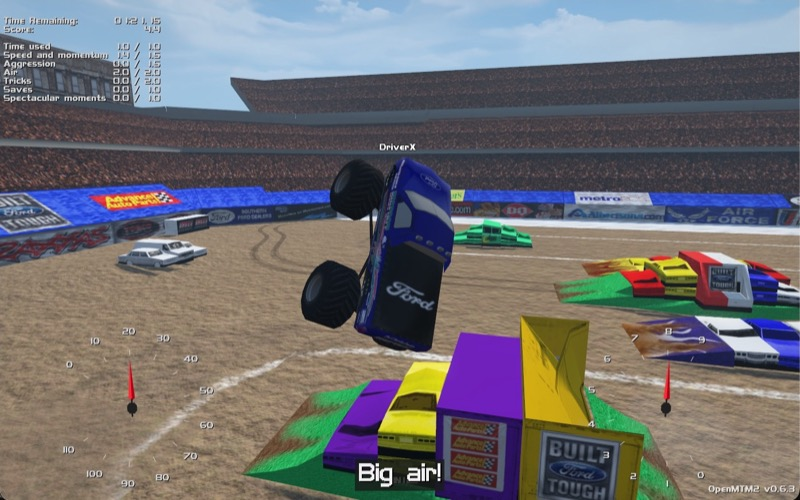

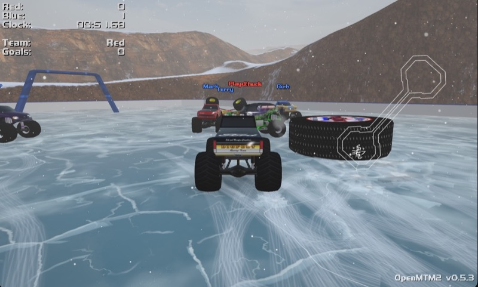

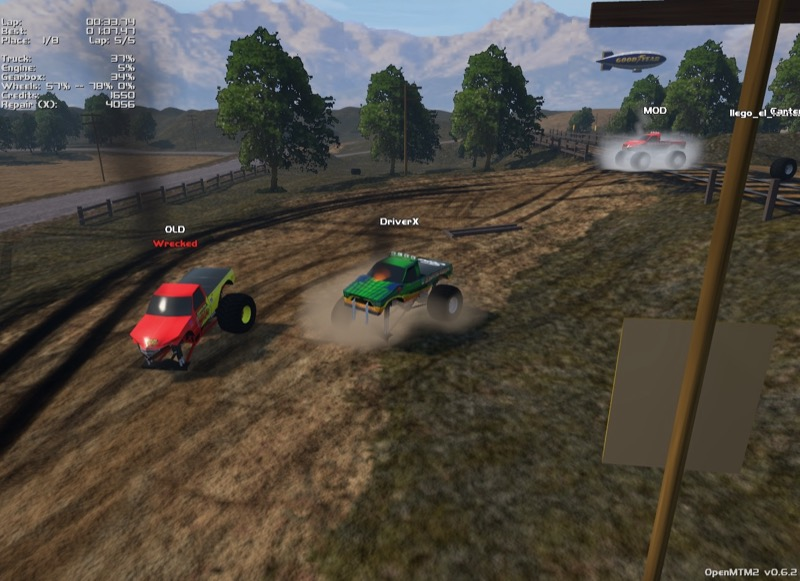

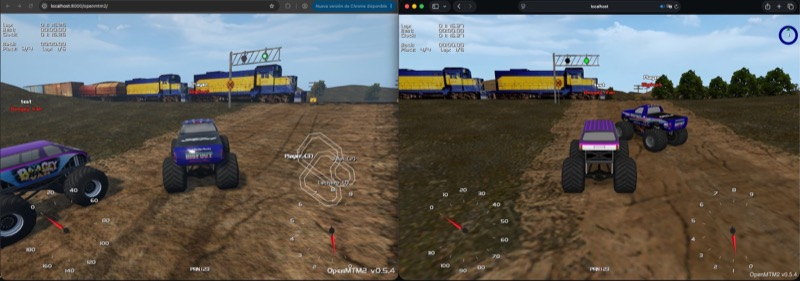

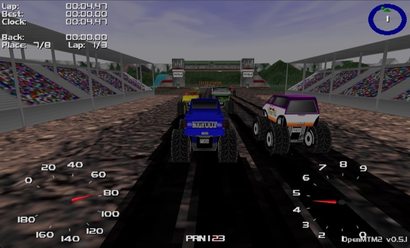

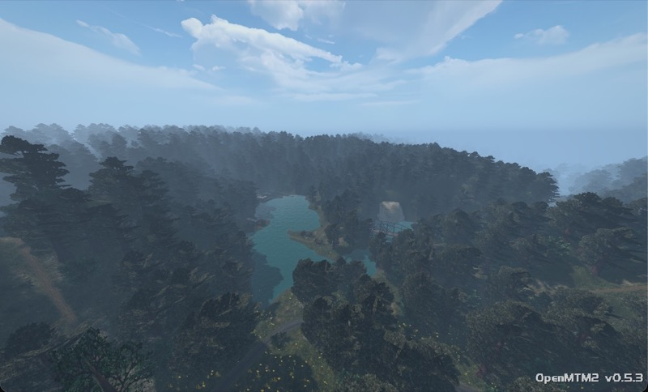

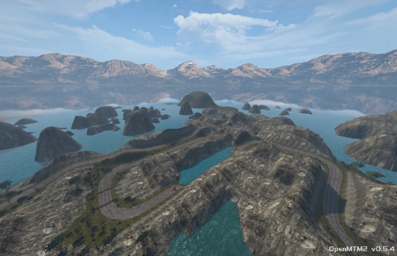

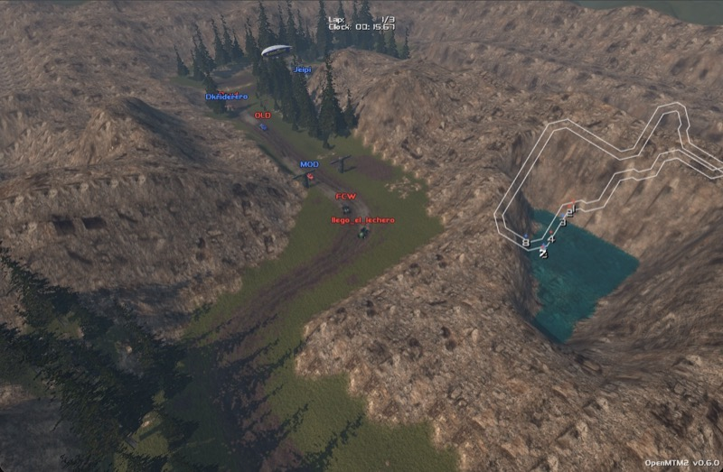
Other projects
Browser tools for the same games, built alongside OpenMTM2. All of them run locally; your files are never uploaded.
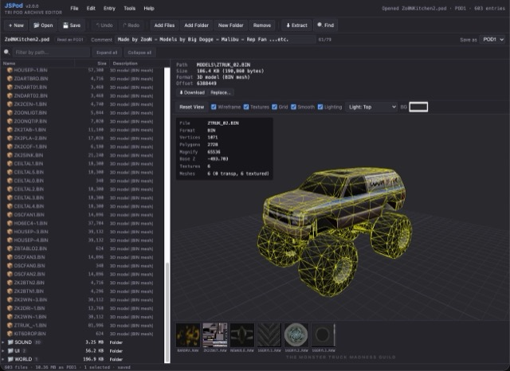 |
JSPodAn editor for Terminal Reality POD archives. Create, edit and save POD1 and POD2 files, and preview the models, textures and sounds inside. |
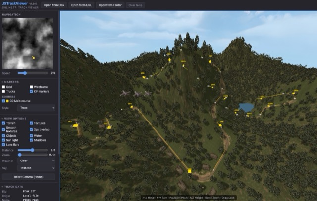 |
JSTrackViewerAn advanced 3D track viewer for MTM1, MTM2, CART Precision Racing, 4x4 Evolution, Terminal Velocity, Fury3, Hellbender and Fly!. Fly around a level or test-drive it. |
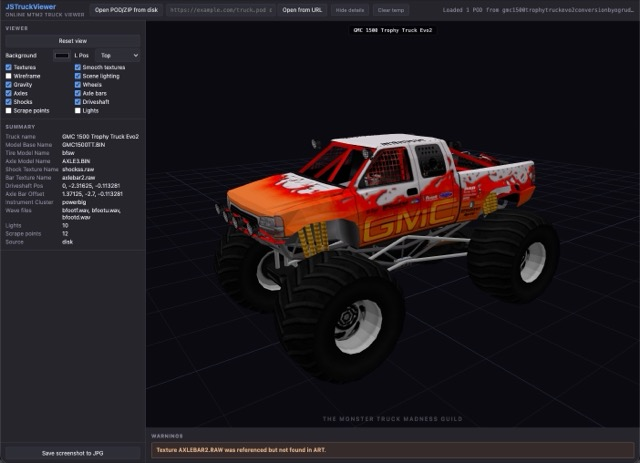 |
JSTruckViewerA 3D vehicle viewer for MTM1 and MTM2 trucks, CART cars and 4x4 Evolution vehicles, fully assembled with wheels, suspension and lights. |
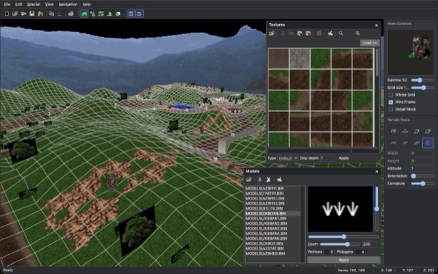 |
JSTraxxTraxx, the classic MTM2 track editor, in the browser. Build terrain, place objects, textures and courses, and save tracks the game can load. |
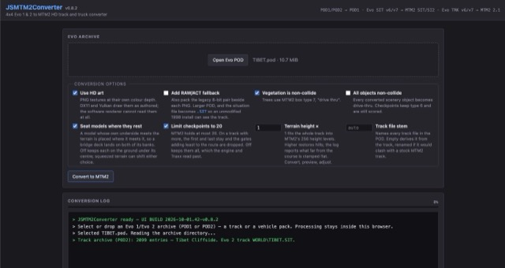 |
JSMTM2ConverterConverts 4x4 Evolution 1 and 2 tracks and trucks into PODs that OpenMTM2 or MTM2 CommPatch 3 can use. |
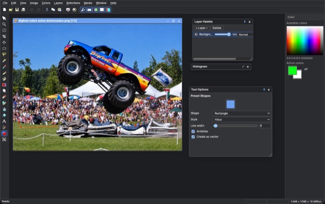 |
JSPaintShopAn image editor modelled on Paint Shop Pro 6, the tool many MTM2 modders used to paint truck and track textures. |
Java tools
Java 17 or newer. For macOS, Windows and Linux.
- JPod: open, browse, preview, extract and build POD archives for every Terminal Reality game.
- JPodman: manage the
pod.inimount list. Shows which tracks and trucks each POD holds, warns about clashing files, among other features.
Windows tools
Based on .NET Framework 4.8
Libraries
- OpenPhotex: reads and writes the file formats of Terminal Reality games, from PODs to tracks, models and textures. TypeScript for browsers and Node.js, with a command-line tool. Core library for JSPod, JSTrackViewer, JSTruckViewer and JSMTM2Converter.
Community Links
- MTM2.com home of the MTM2 community, with news and downloads.
- MTM2.com Forum talk with other players, ask for help and share your tracks and trucks.
- The Monster Truck Madness Guild the MTMG, a website dedicated to help truck and track builders.
- Traxx home page of the classic MTM2 track editor.
- MTM2 tracks an archive of custom tracks to download.
- MTM2 trucks an archive of custom trucks to download.
- Kmaster's House of Wicked Awesomeness Kmaster's MTM2 site with tools and downloads.